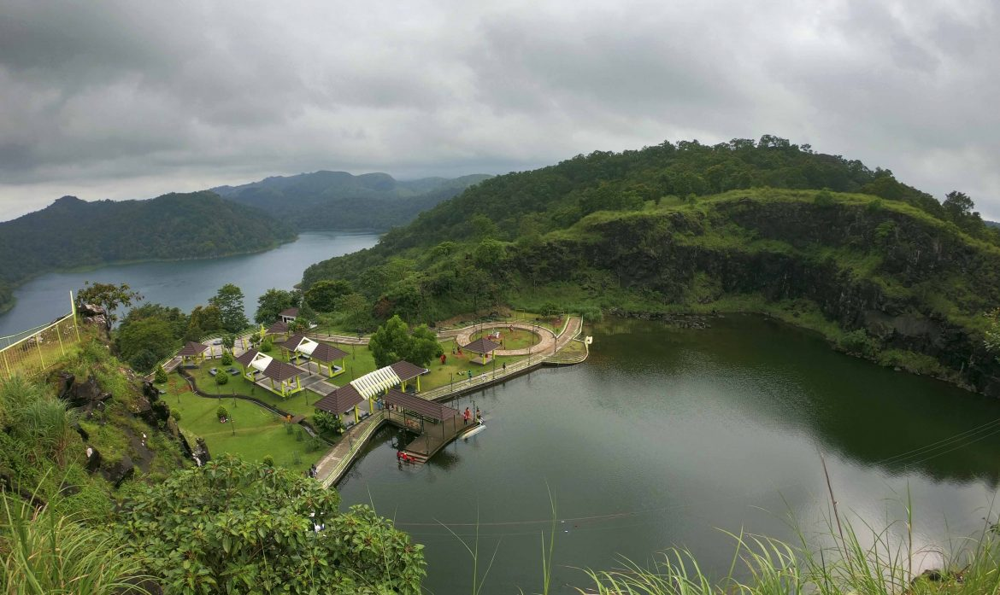

Hill View Parkh
With spectacular views of the Cheruthoni and Idukki Dams, the Hill-view Park serves as a famous tourist destination of Idukki. One can also spot diverse wildlife in its belt natural habitat.

Idukki Arch Dam
Built across the Kuravan and Kurathi hills at a height of about 550 feet, the Idukki Arch Dam is an architectural genius, for the rugged terrain along which it is built. The natural beauty surrounding the dam is breath-taking.